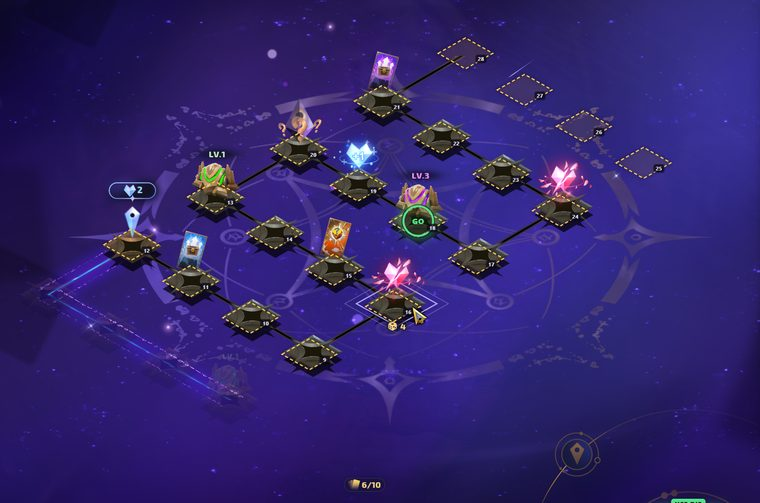
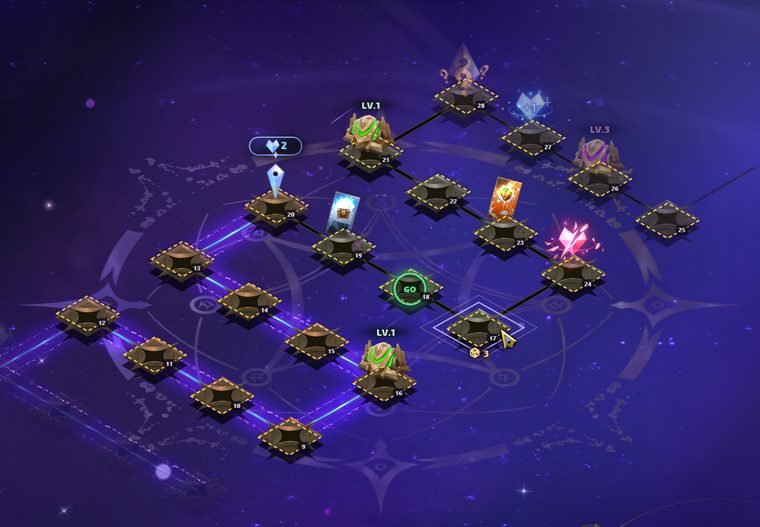
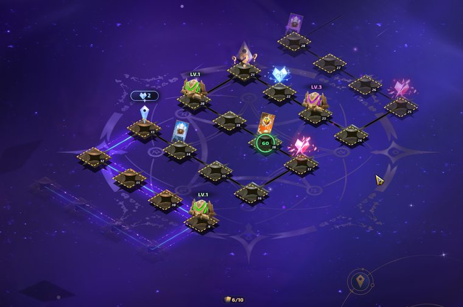

Board
Tap a tile to say what's on it.
Tap a tile to say what's on it · right-click a tile to mark it empty
Advice
Your turn
Tile I'm on joined mid-board or lost? Type your tile number: the helper and the readers follow from there
Life2
Refill die
Chests
Hand
Tell me what happened
Game log
connecting…Waiting for the companion.
Pictures
Pictures of the game window appear here after each move (Take a picture now is on the Play tab).
Hotkeys
These work while you're in the game (no need to switch to the helper). Press Change, then the keys you want (Ctrl, Alt or Shift with a letter, number or F-key); Esc cancels.
In the helper
Close a window or the tile/card pickerEsc
Mark a tile on the board empty (again: back to "not set")Right-click
Something went wrong: send a bug report (saves the moment and a picture, then asks what happened before anything is sent)Ctrl + Alt + J
Loading an old board
- If you load an old board, you have to recalibrate your position. Count the rows from the bottom up, then set your position on the overlay or in the helper.
- Align the board from the bottom row up, until the 5th (top) row is lined up too: every gold outline needs a tile in it, and the top row of outlines must sit on the board's top edge. Your piece (the pin) must sit in the cyan "your piece" outline. If the pin is in another row, or the top outlines are over empty space, the board is a row off.
- After that, the board should update by itself (or use the Manually take a picture button), with most tiles set up correctly.
- Worst case, set up the tiles yourself, and it will work from there.
Lining up the board



How it thinks
Rarity points: what one chest in a slot is worth to you (same loot pool for every chest, better odds the rarer it is). Press Reset for the current defaults.
On the game
The app draws these over the game. The marks can't be clicked; drag a guide by its top bar to move it (it stays where you put it), × hides it. Hotkeys for each are in the Hotkeys tab.
Board
Values for "Highest average value": green 1, blue 1.2, purple 4, gold 10, red 16, rainbow 25. Upgrade cards hit your highest chest they're allowed to touch. 7 chest slots, 10 cards in hand. At 0 life the board ends and you keep your chests.
Save and history
Move history
About
Arcana Helper by Timer. Free to use, change and share (see the LICENSE file): the code under the MIT License with an attribution condition, the data and findings under CC BY 4.0. It comes with no warranty.
Anything built on this helper, its code or its data must credit Timer (Arcana Helper) where its users can see it.